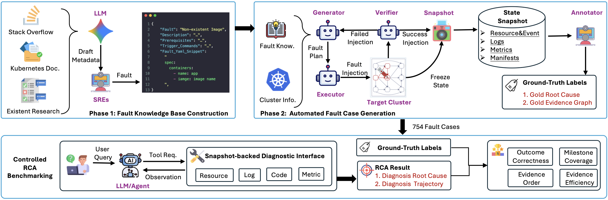

Replay the environment
Resource states, telemetry, code, and cached tool outputs preserve the diagnostic evidence. No cluster deployment is needed to run the released cases.
A reproducible benchmark for agentic root cause analysis in cloud systems. Investigate preserved incident snapshots, follow diagnostic evidence, and evaluate both the answer and the path to it.
LLM4Ops The Chinese University of Hong Kong
Keep the evidence. Remove the live-cluster dependency.
01 / THE IDEA
Diagnose complex cloud failures without rebuilding the cloud.
Live systems change as an agent investigates. Cloud-OpsBench preserves the fault scene as a state snapshot, so different agents can query the same recorded evidence under a reproducible diagnostic interface.

Resource states, telemetry, code, and cached tool outputs preserve the diagnostic evidence. No cluster deployment is needed to run the released cases.
Agents choose tools, collect observations, and reason across multiple steps to identify both the faulty component and the fault type.
Milestone annotations check evidence coverage, admissible ordering, and completeness alongside final RCA correctness and tool-use efficiency.
02 / THE BENCHMARK
An online retail microservice system, with faults spanning eight categories.
A train-ticket booking microservice system, with faults spanning four categories.
Queries, ground truth, tool caches, raw snapshots, and diagnostic source files where available.
One milestone specification per case, with admissible evidence and dependency constraints.
Two auxiliary expert trajectories per case for diagnostic analysis and further research.
03 / PERFORMANCE
Outcome correctness, evidence grounding, and diagnostic efficiency.
| Model | Outcome | Process | |||||||
|---|---|---|---|---|---|---|---|---|---|
| CA ↑ | FA ↑ | JRA ↑ | MC ↑ | EOC ↑ | ECR ↑ | EE ↑ | Steps ↓ | RAR ↓ | |
| GPT-5 | 0.86 | 0.69 | 0.68 | 0.64 | 0.55 | 0.21 | 0.64 | 5.56 | 0.00 |
| Claude-Sonnet-4 | 0.71 | 0.56 | 0.52 | 0.61 | 0.54 | 0.44 | 0.44 | 6.04 | 0.00 |
| Gemini-2.5-Pro | 0.81 | 0.69 | 0.67 | 0.74 | 0.68 | 0.46 | 0.63 | 6.21 | 0.00 |
| Qwen3.5-Plus | 0.80 | 0.68 | 0.64 | 0.70 | 0.64 | 0.34 | 0.65 | 5.92 | 0.00 |
| Qwen3-235B-A22B | 0.61 | 0.46 | 0.40 | 0.56 | 0.48 | 0.34 | 0.36 | 7.03 | 0.01 |
| DeepSeek-V4-Flash | 0.88 | 0.77 | 0.76 | 0.74 | 0.64 | 0.38 | 0.62 | 6.45 | 0.00 |
| Gemini-2.5-Flash | 0.82 | 0.67 | 0.65 | 0.71 | 0.67 | 0.37 | 0.58 | 6.49 | 0.01 |
| Qwen3.5-27B | 0.85 | 0.71 | 0.70 | 0.75 | 0.70 | 0.43 | 0.54 | 6.87 | 0.01 |
| Qwen3-14B | 0.61 | 0.42 | 0.41 | 0.70 | 0.57 | 0.45 | 0.32 | 14.58 | 0.28 |
| Qwen3-8B | 0.35 | 0.19 | 0.19 | 0.58 | 0.40 | 0.16 | 0.37 | 16.01 | 0.46 |
| Model | Outcome | Process | |||||||
|---|---|---|---|---|---|---|---|---|---|
| CA ↑ | FA ↑ | JRA ↑ | MC ↑ | EOC ↑ | ECR ↑ | EE ↑ | Steps ↓ | RAR ↓ | |
| GPT-5 | 0.70 | 0.71 | 0.68 | 0.61 | 0.53 | 0.15 | 0.64 | 7.03 | 0.00 |
| Claude-Sonnet-4 | 0.60 | 0.62 | 0.59 | 0.61 | 0.52 | 0.15 | 0.52 | 7.42 | 0.00 |
| Gemini-2.5-Pro | 0.62 | 0.61 | 0.58 | 0.58 | 0.51 | 0.14 | 0.51 | 7.13 | 0.00 |
| Qwen3.5-Plus | 0.67 | 0.79 | 0.64 | 0.64 | 0.58 | 0.25 | 0.63 | 5.90 | 0.00 |
| Qwen3-235B-A22B | 0.42 | 0.23 | 0.21 | 0.53 | 0.50 | 0.19 | 0.34 | 8.70 | 0.03 |
| DeepSeek-V4-Flash | 0.69 | 0.71 | 0.63 | 0.62 | 0.56 | 0.24 | 0.53 | 7.68 | 0.00 |
| Gemini-2.5-Flash | 0.60 | 0.55 | 0.53 | 0.45 | 0.42 | 0.12 | 0.48 | 4.91 | 0.00 |
| Qwen3.5-27B | 0.62 | 0.64 | 0.58 | 0.59 | 0.55 | 0.18 | 0.55 | 7.05 | 0.01 |
| Qwen3-14B | 0.41 | 0.25 | 0.24 | 0.60 | 0.52 | 0.20 | 0.37 | 14.53 | 0.31 |
| Qwen3-8B | 0.38 | 0.26 | 0.22 | 0.53 | 0.45 | 0.06 | 0.45 | 11.55 | 0.22 |
All values are reported as provided in the benchmark results. Higher is better (↑), except Steps and RAR (↓). Scores are proportions; Steps is the mean number of diagnostic tool invocations.
04 / GET STARTED
Download the snapshots. Choose your diagnostic interface.
from huggingface_hub import snapshot_download
snapshot_download(
repo_id="LLM4Ops/Cloud-OpsBench",
repo_type="dataset",
revision="v1.0.0",
local_dir="cloudopsbench-data",
)Install huggingface_hub first. This downloads the complete artifact tree, not just the case index.
Use the baseline agent or the Skill-enabled variant, with outcome and milestone-based process evaluation.
OR — CONNECT YOUR OWN HARNESSExpose snapshot tools to MCP-compatible agents, including Codex and OpenCode. 12 tools for Boutique; 10 for TrainTicket.
Keep evaluation labels separate. Ground truth, milestones, and expert trajectories are research/evaluation artifacts, not observations to expose to a task agent.
05 / CITE THE BENCHMARK
If Cloud-OpsBench supports your research, please cite the benchmark and its state snapshot paradigm.
@article{wang2026cloud,
title={Cloud-OpsBench: A reproducible benchmark for agentic root cause analysis in cloud systems},
author={Wang, Yilun and Yu, Guangba and Huang, Haiyu and Huang, Yujie and Wang, Zirui and Chen, Pengfei and Lyu, Michael R},
journal={arXiv preprint arXiv:2603.00468},
year={2026}
}
@inproceedings{yu2026freezing,
title={Freezing the Crime Scene: A State Snapshot Paradigm for Reproducible Agentic SRE Evaluation},
author={Yu, Guangba and Wang, Yilun and Lyu, Michael R},
booktitle={Proceedings of the 34th ACM International Conference on the Foundations of Software Engineering},
pages={1733--1737},
year={2026}
}